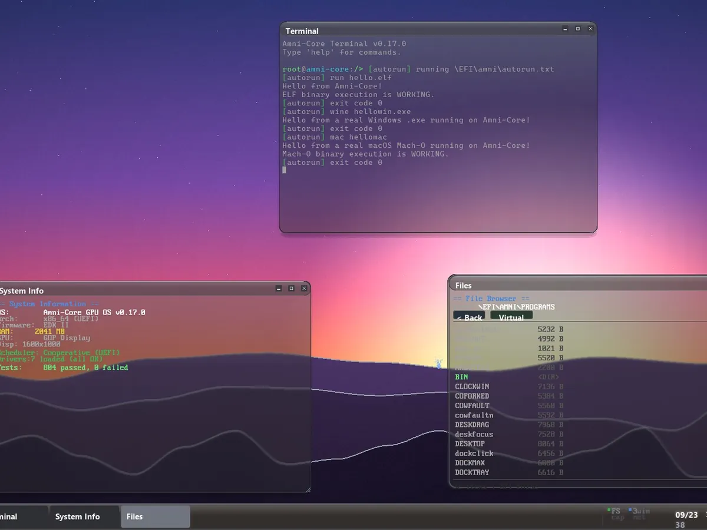
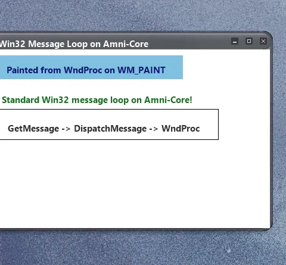
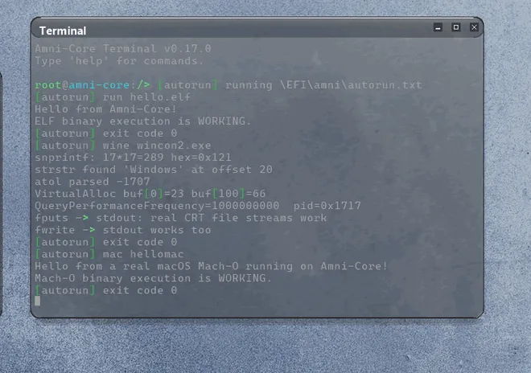

A FROM-SCRATCH OS • RUNS REAL WINDOWS, LINUX & macOS APPS • IN DEVELOPMENT
Its own kernel, with no Linux, BSD or Windows underneath. It boots on modern PCs into a frosted-glass desktop.

Real, unmodified Windows, Linux and Mac programs run directly on the kernel, with no virtual machine.


An active-development build. Write the EFI folder to a FAT32 USB stick, or boot it in QEMU.
UEFI-bootable • about 24 MB • boot steps are in the readme inside the zip. Screenshots are from real UEFI boots of preliminary builds.